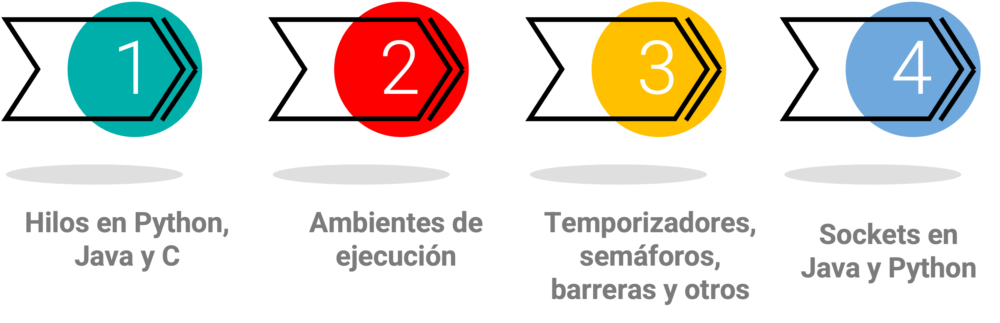

Unidad 4: Hilos y Sockets#
Contenido de la unidad#
Introducción a Hilos#
Concepto de hilos (threads)#
Múltiples tareas al mismo tiempo de manera concurrente
Comparte recursos con otros hilos en el mismo proceso.

Los hilos o «threads» son una forma de permitir que un programa realice múltiples tareas al mismo tiempo de manera concurrente, y una unidad básica de ejecución de código que comparte recursos con otros hilos en el mismo proceso.
Esto nos permite aprovechar las capacidades multiprocesador de nuestras máquinas para ejecutar varias instrucciones a la vez, como subprocesos independientes.
Procesos versus hilos (processes versus threads)#
Un proceso puede constar de varios hilos paralelos, y la creación y gestión de un hilo por parte del sistema operativo es generalmente menos costosa en términos de recursos de CPU que la creación y gestión de un proceso. Los hilos se utilizan para tareas pequeñas, mientras que los procesos se utilizan para tareas más pesadas, como la ejecución de aplicaciones, y los hilos de un mismo proceso comparten el espacio de direcciones y otros recursos, a diferencia de los procesos, que son independientes entre sí.
Procesos
Un proceso puede constar de varios hilos.
La creación y gestión de un proceso es costosa en recursos de CPU.
Se utilizan en tareas pesadas (ejecución de aplicaciones).
Los procesos son independientes entre sí.
Hilos
El hilo es la unidad fundamental de ejecución del código.
La creación de un hilo en el SO es menos costosa en recursos de CPU.
Se utilizan en tareas pequeñas.
Los hilos de un mismo proceso comparten el espacio de direcciones y otros recursos.
Ventajas de los hilos#
Mejora del rendimiento al permitir la ejecución concurrente de tareas, especialmente en sistemas con múltiples núcleos de procesador.
Uso eficiente de recursos al compartir el mismo espacio de memoria y recursos del sistema, lo que los hace más ligeros en comparación con los subprocesos.
Comunicación rápida y eficiente entre hilos debido al uso del mismo espacio de memoria.
Tiempo de respuesta mejorado al permitir la ejecución paralela o intercalada de tareas, lo que es especialmente útil en aplicaciones de interfaz gráfica (un hilo puede manejar la entrada del usuario mientras otro hilo realiza tareas de procesamiento en segundo plano.)
Ventajas

Desventajas de los hilos#
Problemas de sincronización pueden ocurrir cuando se accede y modifica datos compartidos entre hilos, lo que puede causar condiciones de carrera y bloqueos si no se manejan adecuadamente.
En CPython, el Global Interpreter Lock (GIL) limita el aprovechamiento del paralelismo real en sistemas con múltiples núcleos de procesador, aunque la concurrencia sigue siendo posible.
La depuración de aplicaciones multihilo puede ser más complicada debido al comportamiento no determinista de los hilos.
Un error en un hilo puede afectar a otros hilos y al proceso completo debido al aislamiento limitado entre los hilos que comparten el mismo espacio de memoria.
Desventajas

La clase Thread y sus métodos principales#
Herramienta para los hilos en Python#
El subprocesamiento del módulo de Python tiene el método Thread():
class threading.Thread(group=None, target=None, name=None, args=(), kwargs={})

group: Este es el valor del grupo que debe ser None; esto está reservado para futuras implementaciones.
target: Esta es la función que se ejecutará cuando inicie una actividad de subproceso.
name: Este es el nombre del hilo; por defecto, se le asigna un nombre único de la forma Thread-N.
args: Esta es la tupla de argumentos que se pasarán a un destino.
kwargs: Este es el diccionario de argumentos de palabras clave que se utilizarán para la función de destino.
Ambientes de ejecución#
Configuremos nuestros ambientes locales#
¿Por qué pasarnos a trabajar localmente? ¿Por qué no usar Colab?

El colab solo tiene dos procesadores.
Las salidas de las celdas presentan retrasos, por lo que lo que se escribe no es en tiempo real y eso es crítico para nuestros temas.
Los gestores de ambientes y paquetes como Anaconda ayudan a aislar los entornos de desarrollo que se usan para diferentes proyectos.
VSC es una herramienta completa para desarrolladores y permite integrar muchos ambientes, diferentes lenguajes y extensiones.
Instalemos y configuremos#
Python#


Java#
Hacer la configuración correspondiente para trabajar con Java.
💬 Configurar Java
Configuración subsistema Linux y notebooks de java Locales
Creación y uso de hilos#
Herramienta para los hilos en Python#
La forma más sencilla de usar un subproceso es instanciarlo con una función de destino como parámetro y luego llamar al método start() para que comience a realizar el hilo.
Nota
Time code
Analizar el notebook llamado Hilos_en_Python.ipynb
Herramienta para los hilos en Java#
Asegurarse de haber realizado correctamente la configuración del entorno con Java.
Nota
Time code
Analizar el notebook llamado HilosJavaBasico.ipynb